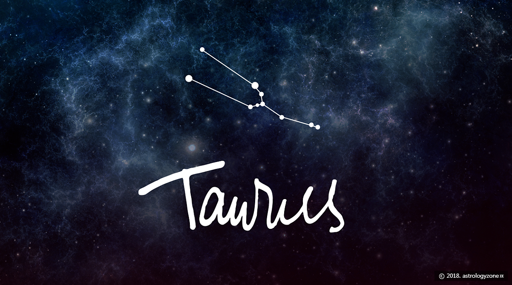

Taurus (황소자리)
황도 12궁의 제 2궁
4월 20일 ~ 5월 20일
황도 12궁의 두 번째 별자리이며, 황소자리의 수호성은 금성으로, 천칭자리와 같은 수호성을 갖는다. 한국의 공휴일로는 어린이날과 부처님 오신날 대부분이 여기에 해당한다.
별자리에서 가장 밝은 별로 1등성 알데바란이 있어서 찾기 어렵지 않다. 오리온자리의 허리띠인 삼형제별을 위쪽으로 쭉 이어가다보면 만나는 유난히 빛나는 붉은 별이 알데바란이다.
고대에는 매우 중요하게 취급된 별자리로, 기원전 12,000~15,000년경의 구석기 시대 유적지인 라스코 동굴벽화나 괴베클리 테페 등지에서도 발견된다. 이 때의 황소자리 모습(두 뿔을 왼쪽으로 향한 반신황소)이 현대까지 별다른 변경없이 전해지고 있는 유서 깊은 별자리다.
별자리의 모델에 관해 여러 설이 있지만 가장 많이 알려진 것은 역시 희대의 카사노바 제우스가 페니키아의 공주 에우로파를 유혹하기 위해 변신한 흰 황소의 모습. 또한
길가메쉬 서사시에서 나온 하늘의 황소 구갈안나는 황소자리 그 자체이다.